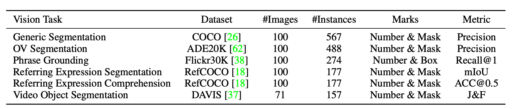
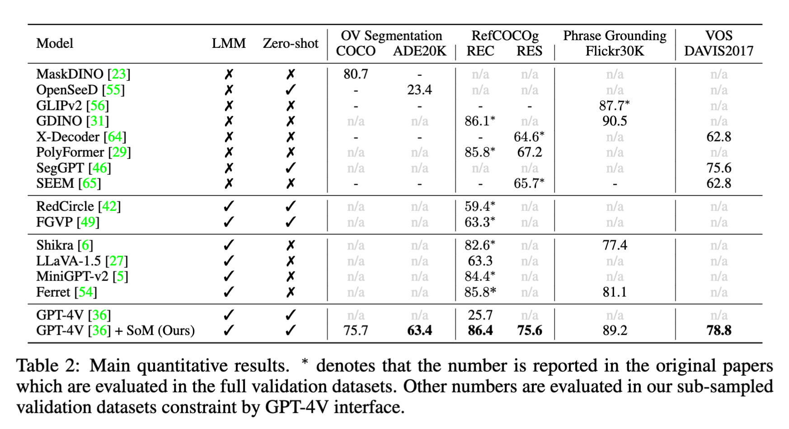

We present Set-of-Mark (SoM), simply overlaying a number of spatial and speakable marks on the images, to unleash the visual grounding abilities of large multimodal models (LMMs), such as GPT-4V.

We provide a ToolBox [Instruction] to help you generate marked image prompts. Try SoM prompts on Chat GPT4-v!
# Text prompts to GPT-4V for the SoM examples:
- Example1: What is on the left side of the right laptop?
- Example2: Can you count how many fruits and what are the categories in the basket?
 